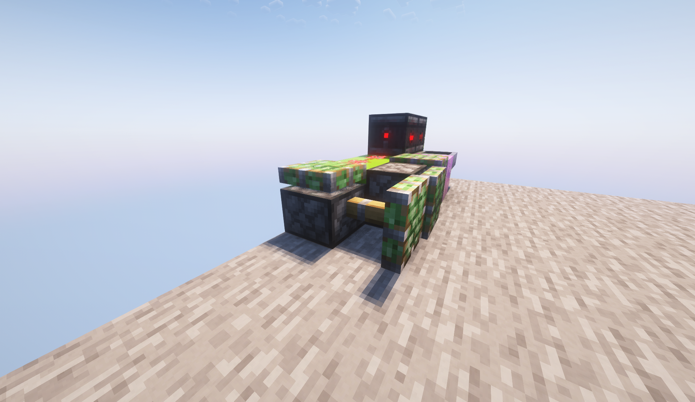
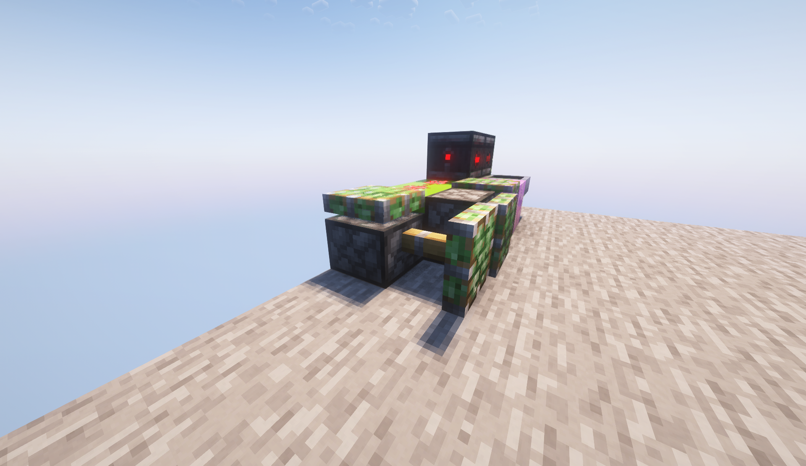

Sobre mí
 

Alessio2122 es un jugador de Minecraft y (casi) programador al que le gustan los mecanismos, la ingeniería y aprender cosas nuevas que le puedan ser útiles.
Tiene un canal de YouTube y una página web alojada en Github Pages.
Siempre encuentra alguna forma de atraer a su público con sus invenciones, ideas y guías.
En esta página web se publican algunas de ellas, ademas de sus videos, que complementan mucha de la información o añaden otros temas.